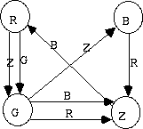

A very colourful one-person game can be played as follows. First you select a set of colours. Then you draw
at least three circles using some or all of the colours. You may use a colour more than once. There will be
at least as many circles as there are colours. You then draw coloured arrows to connect some of these circles.
Any number of arrows, with any colours, may be used to connect any pair of circles. You may draw two arrows in
opposite directions if desired.
For example, if we use the four colours R, G, B, and Z and four circles then we could have the following situation:

Three different circles are then picked from the set; two of them have a counter placed inside, while the
third is the ``target" circle. A counter may be moved from one circle to another along an arrow (in the direction
of the arrow), but only if (i) the other counter is not in the circle being moved to, and (ii) the colour of the
arrow is the same as the colour of the circle the other counter is in. A single counter may be moved several
times in succession - they don't have to be moved alternately. The aim is to get one of the counters into the
target circle using the smallest number of moves; if the target circle can't be reached, the game is ``impossible".
For example, in the picture above, if one counter is in the B circle, the other counter is in the Z circle and the
target is the G circle, then the game can only be won by moving the Z counter to the R circle (since a B arrow runs
in that direction), which makes it possible to move the B counter to the Z circle along the R arrow, and the R
counter can now be moved to the G circle along the Z arrow, for a total of three moves.
Input will consist of descriptions of
several games, using numbers instead of colours. The first line of each game description contains five
numbers, N, R, S, T and M, where N is the number of circles in the game (they will be numbered 1 to N,
with N 100), R and S are the numbers of the circles the two counters start in, T is the number of the
target circle, and M is the total number of arrows connecting the circles (
M5, 000). After this will
come several lines (maximum length 60 characters each) giving the colours of the circles in order from
circle 1 to circle N, with up to 20 numbers per line, separated by one or more spaces. The colours are
denoted by numbers from 1 to N - some of these numbers may be unused. Then come M lines which define the
arrows, in no particular order. Each contains three numbers; the first is the number of the starting circle,
the second the number of the ending circle, and the third is the colour of the arrow. The input will be
terminated by a line consisting of a five zeroes. The first example below describes the picture above.
100), R and S are the numbers of the circles the two counters start in, T is the number of the
target circle, and M is the total number of arrows connecting the circles (
M5, 000). After this will
come several lines (maximum length 60 characters each) giving the colours of the circles in order from
circle 1 to circle N, with up to 20 numbers per line, separated by one or more spaces. The colours are
denoted by numbers from 1 to N - some of these numbers may be unused. Then come M lines which define the
arrows, in no particular order. Each contains three numbers; the first is the number of the starting circle,
the second the number of the ending circle, and the third is the colour of the arrow. The input will be
terminated by a line consisting of a five zeroes. The first example below describes the picture above.
For each game description in the input, one line
of output must be produced. This line should contain the minimum number of moves to complete the game,
or `0' if the game is impossible.
4 2 3 4 7
1 2 3 4
1 4 3
1 4 4
2 3 1
3 1 2
4 2 3
4 3 2
4 3 1
5 3 4 1 8
2 3 2 1 4
2 1 2
4 1 5
4 5 3
5 1 4
3 2 1
3 2 2
5 3 3
3 5 1
0 0 0 0 0
3
4
Miguel Revilla
2004-07-08